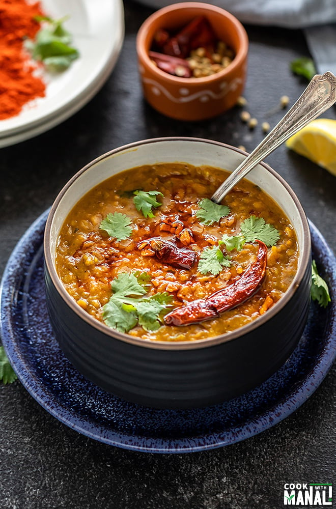
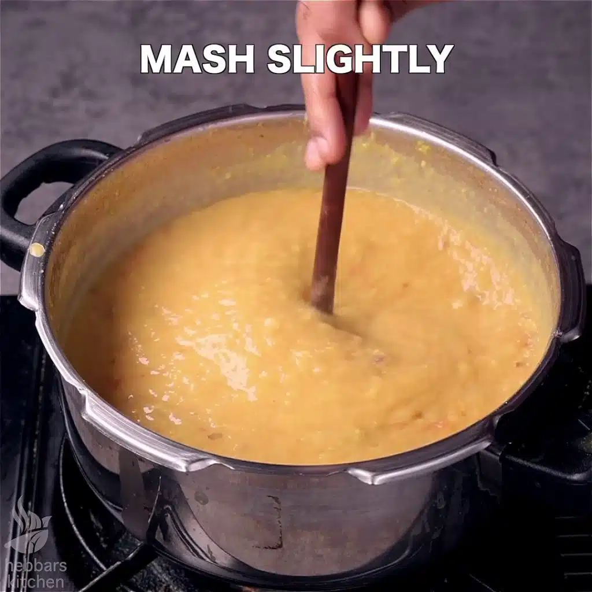
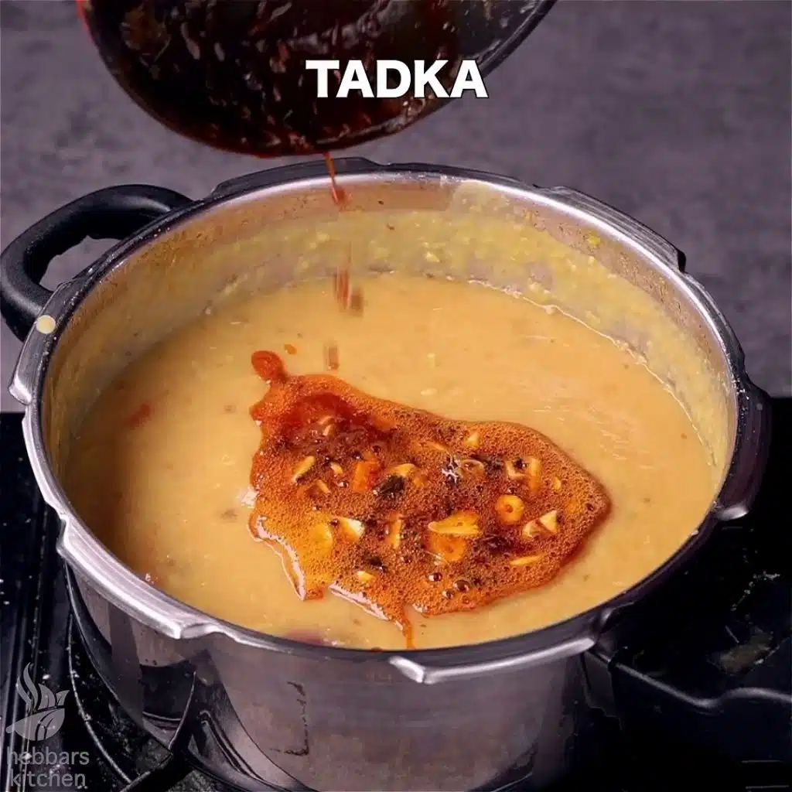
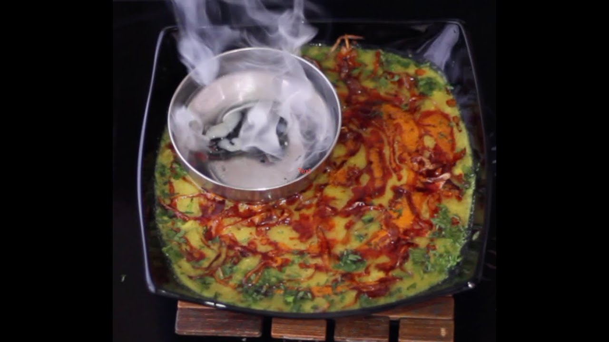

Dal Tadka

Ingredients Required
- Dal(lentils)
- Aromatics
- Tomatoes
- Chilies
- Ground Spices
- Kasuri Methi
- Lemon Juice
- Ghee
- Garlic and Ginger
- Hing and Curry leaves
Recipe
- Cook the Dal
- Take one cup of mixed dals of your choice and rinse it thoroughly.
- Add it to a pressure cooker with 3 cups of water.
- Pressure cook till 3-4 whistles.

- Make the Masala
- While the dal cooks, prepare the first tempering.
- To a hot pan, add 1 tablespoon of ghee and 1 teaspoon of cumin seeds and let them crackle.
- Add one teaspoon each of minced garlic and ginger. Cook until aromatic.
- Add half cup of chopped onions and 1 whole sliced green chili.
- Now add the spices- red chili powder, coriander powder, turmeric powder, and garam masala.
- Add half a cup of finely chopped tomatoes and saute this mixture for 1-2 minutes.
- By now, the dal should be cooked. Let the pressure inside the pressure cooker drop slowly on its own.
- Adjust the consistency of the cooked dal if needed then add the preparation to it.

- Smoke the Dal
- Heat a piece of wood over direct flame and place it in a steel cup.
- Add some ghee to the cup. This should invoke smoking.
- Place the steel cup inside the pressure cooker and cover it to let the smoke infuse into our dal and give it extra flavour.

Enjoy your hot, smokey and spicy Dal Tadka with some rice or naan!
Back to Homepage